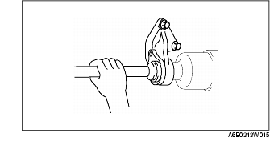

1. Verify that the joint shaft is not twisted or cracked.
-
• If there is any malfunction, replace the part.
2. Turn the joint shaft by hand and verify that the bearing rotates smoothly and freely.

-
• If there is any malfunction, replace the part.